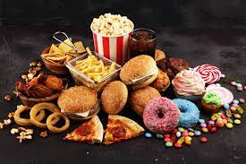

Junk Food
Junk Food
"Review on Junk Food"

This is a bunch of junk food that one might eat and become sick or unhealthy.
NOEL SANAGASETTI: Junk tastes good but is unhealthy.
I think that junk food is amazing to have once in while. I do not think one should have junk food all the time because of the possibility of becoming seriously ill and spoiling the health. To always be helthy, you should not eat these junk foods which will affect the rest of your health. One way of helping you to stop getting addicted to junk food is to eat healthy snacks wich will have a good impact on you rather than junk foods that could damage your health which could lead to problems that are more fatal and more important.